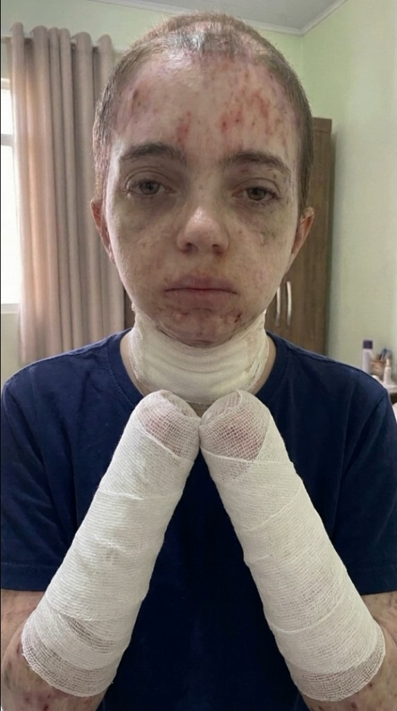
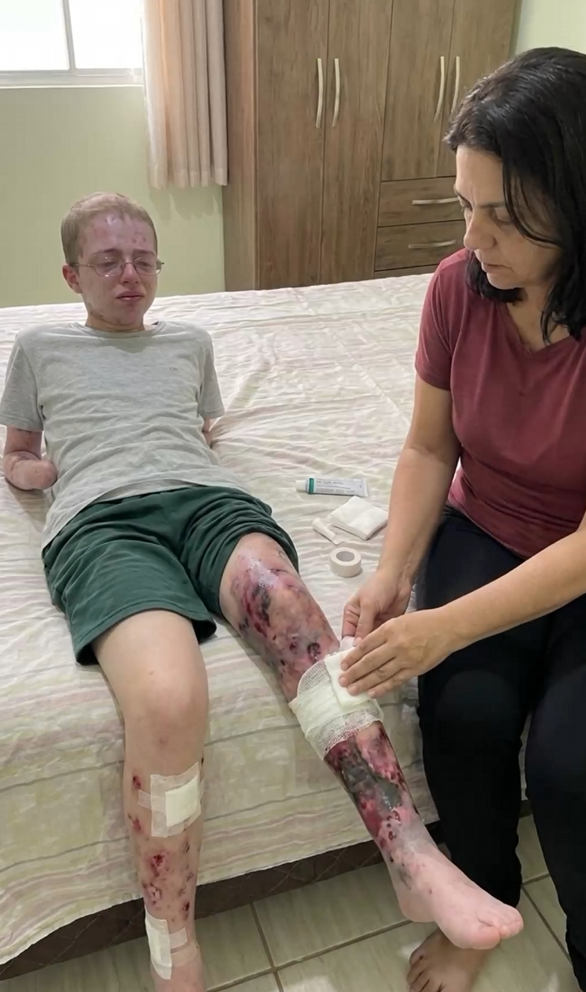
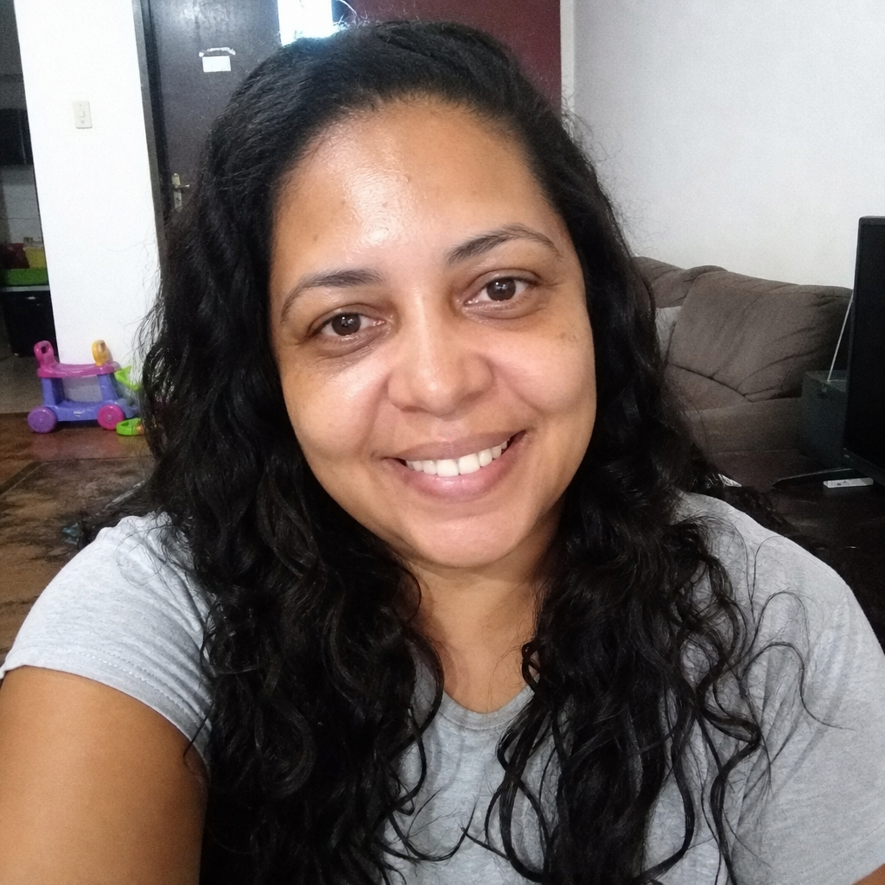
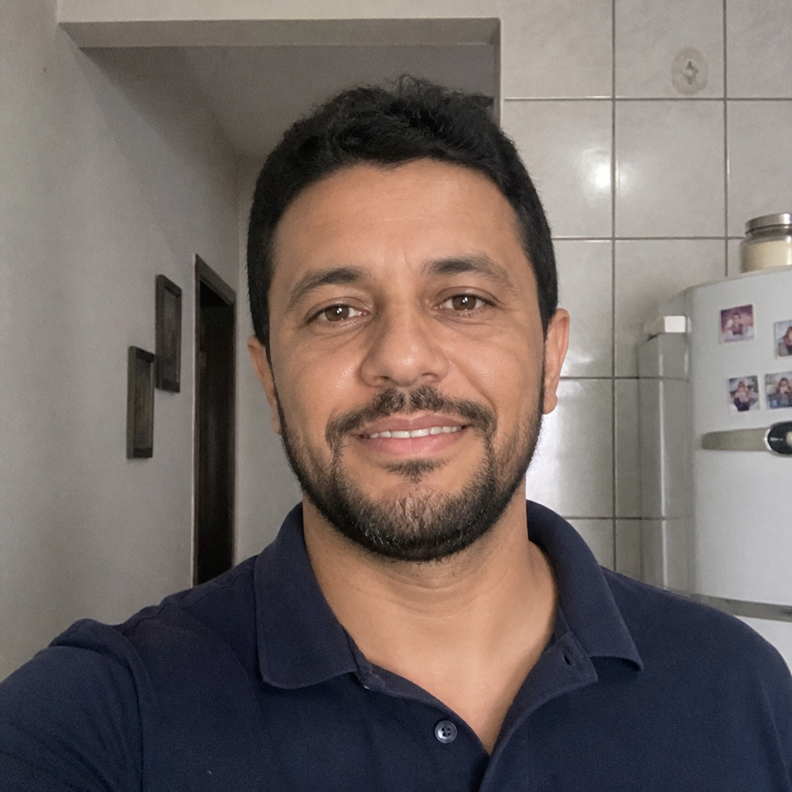
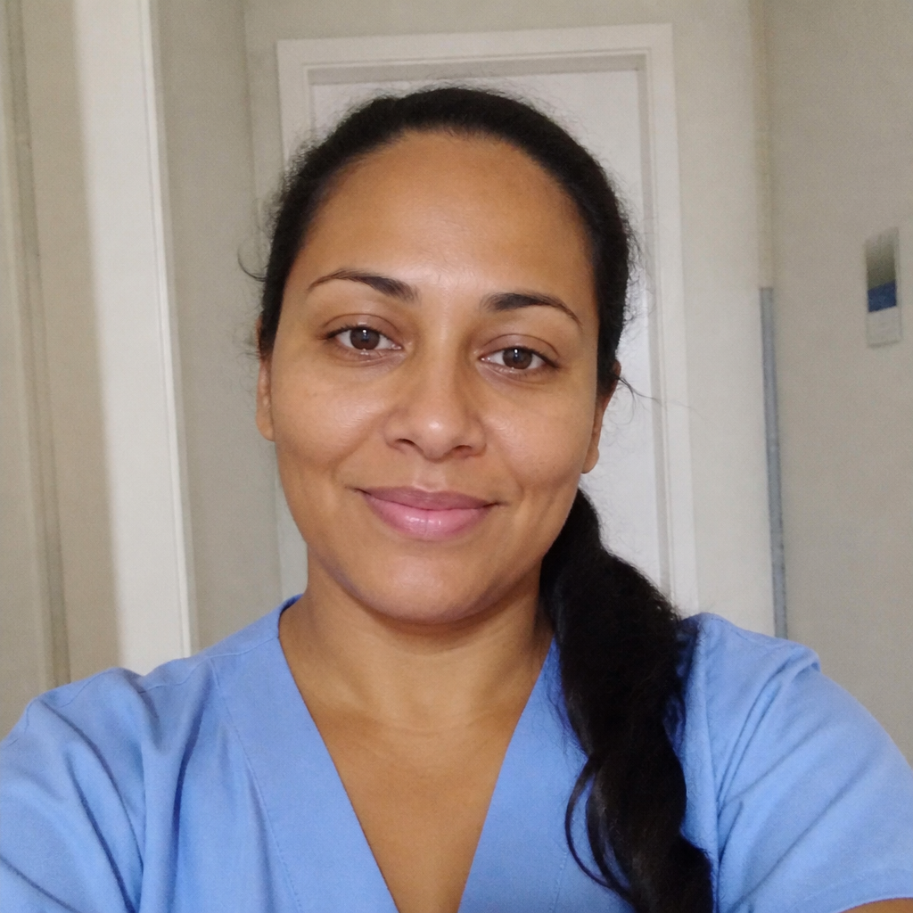

A doença já tirou muito de Gabriel. Agora, ele luta para não perder também a perna.
Gabriel tem apenas 13 anos e convive com uma doença rara e extremamente dolorosa. Ele já perdeu as duas mãos — e hoje enfrenta o risco de uma nova perda.

PIX seguro · 100% destinado ao procedimento na perna, curativos, medicamentos e cuidados diários do Gabriel · Meta R$ 87.000
💚 Um menino de 13 anos que já perdeu demais
Gabriel tem apenas 13 anos e convive com uma doença rara e extremamente dolorosa, que deixa sua pele tão frágil que até pequenos atritos podem provocar feridas.
Mesmo tão jovem, ele já enfrentou uma perda devastadora: Gabriel perdeu as duas mãos.
Enquanto outras crianças da sua idade fazem planos para o futuro, Gabriel enfrenta curativos, dores e o medo do que pode acontecer com seu próprio corpo.

🩹 Agora, sua família vive um novo momento de angústia
Uma grave ferida em sua perna colocou Gabriel diante do risco de uma nova perda, e ele precisa realizar um procedimento urgente.
A mãe de Gabriel está fazendo tudo ao seu alcance para ajudá-lo, mas essa é uma luta difícil demais para enfrentar sozinha.
"Meu filho já perdeu as duas mãos para essa doença. Agora eu faço de tudo para que ele não perca também a perna. Faço os curativos todos os dias e seguro a dor junto com ele. Não consigo enfrentar isso sozinha — só quero dar ao meu filho uma chance." — A mãe do Gabriel
❤️ Ele ainda tem sonhos e uma vida inteira pela frente
Cada gesto de apoio aproxima Gabriel do procedimento que ele precisa e traz um pouco de alívio em meio a tanto sofrimento. É por isso que a família precisa de mãos amigas para conseguir:
- O procedimento urgente para tratar a grave ferida na perna;
- Os curativos especiais e materiais usados todos os dias;
- Medicamentos para controlar a dor e evitar infecções;
- O acompanhamento médico contínuo que a doença rara exige.
Cada real aproxima Gabriel de uma chance de salvar sua perna agora.
🤝 Ajude Gabriel a ter uma chance de salvar sua perna
Gabriel tem apenas 13 anos. Ele ainda tem sonhos, esperança e uma vida inteira pela frente.
Se o sofrimento desse menino tocou você, faça o que estiver ao seu alcance para ajudá-lo nessa luta.
de salvar sua perna.
💚 Escolha um valor para ajudar o Gabriel
Cada real ajuda a pagar o procedimento na perna, os curativos, os medicamentos e os cuidados diários que dão a Gabriel uma chance.
PIX seguro · Leva menos de 1 minuto
Mensagens de Apoio (3)

Chorei do começo ao fim lendo a história do Gabriel. Um menino tão novo passando por tanta coisa… Ninguém merece isso, ainda mais uma criança. Doei com o coração apertado, força pra ele e pra mãe guerreira!

Sou pai de um menino da mesma idade e nem consigo imaginar essa dor. Gabriel já perdeu as duas mãos e ainda luta pela perna… que garoto forte. Contribuí com o que pude e já mandei pra família toda. Vamos ajudar!

Uma mãe fazendo curativo no filho todos os dias… isso parte o coração. Um pouco de cada um já faz uma diferença enorme. Já doei e compartilhei com toda a minha igreja. Deus proteja esse menino!
Você não pode fazer a doença desaparecer. Mas pode dar a Gabriel a chance de tratar a perna e ter o cuidado que ele precisa para continuar lutando.
Doe o valor que puder. Compartilhe se não puder doar. E não deixe Gabriel e sua mãe enfrentarem essa luta sozinhos.
Comentários encerrados para esta publicação